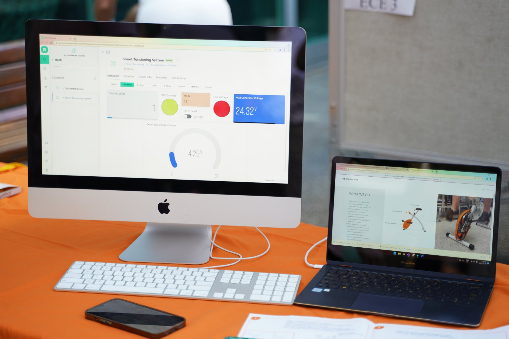
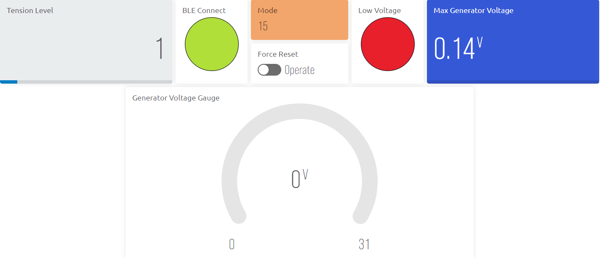
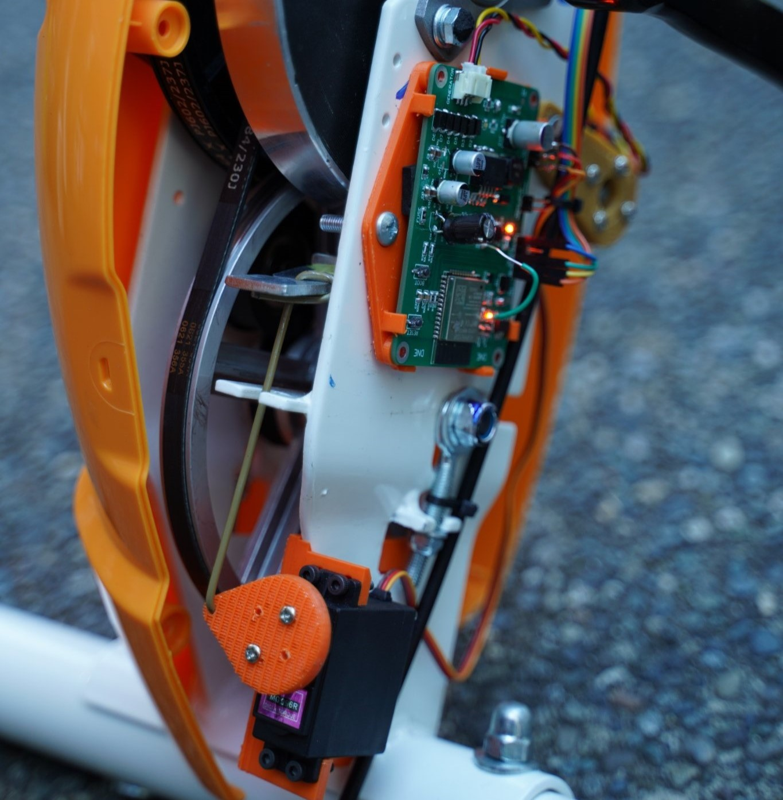
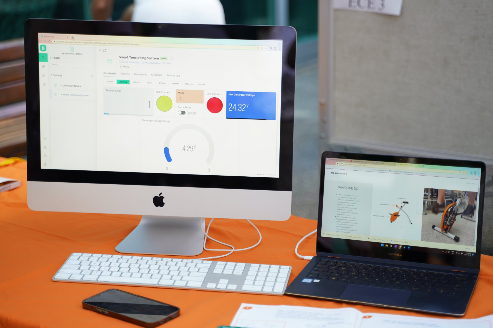
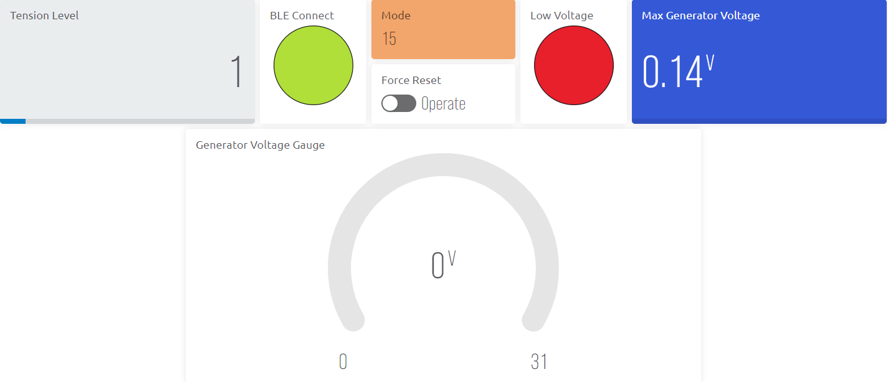
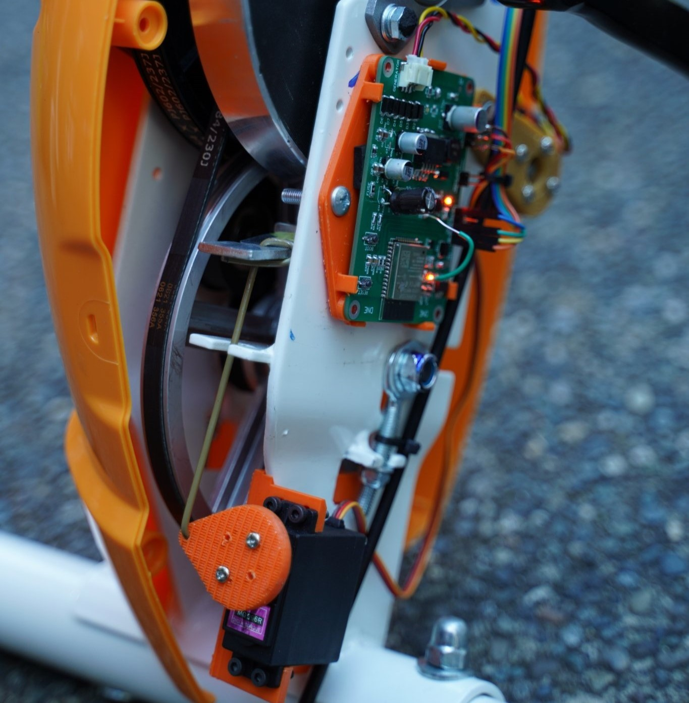

TensionTrak
 





Project information
- Hardware: ESP32, servo motor
- Firmware/Software: C++, WiFi, BLE, Blynk
- Project Duration: June 2022 - August 2022
- Project GitHub: GitHub
- Project Website: Website
This is a team project of 4 ECE students for the UVic ECE499 course. The purpose of the project is to create a solution to control tension level from an existing ESP32 controller board on the Under-The-Desk Bike of Ergonomyx Inc. A servo motor will adjust the magnet array position, which affects the Eddie current applied in the pedal motor, hence increases or decreases pedalling resistance. Commands are sent to the board via BLE from a smartphone. Each member was responsible for an aspect of the project: electrical, mechanical, firmware & website, and testing. I was in charge of the firmware and website development. Additionally, 1 week before the due date, I came up with the idea to use the Blynk server to bring real-time visualization of data and control and finish the Blynk backend & firmware requirement for Blynk on time, which significantly improved our project's demonstration mark. I also brought to the table the idea of automatic tension control with 5 modes, which brought lots of joy to anyone who tried our TensionTrak-equipped bike.